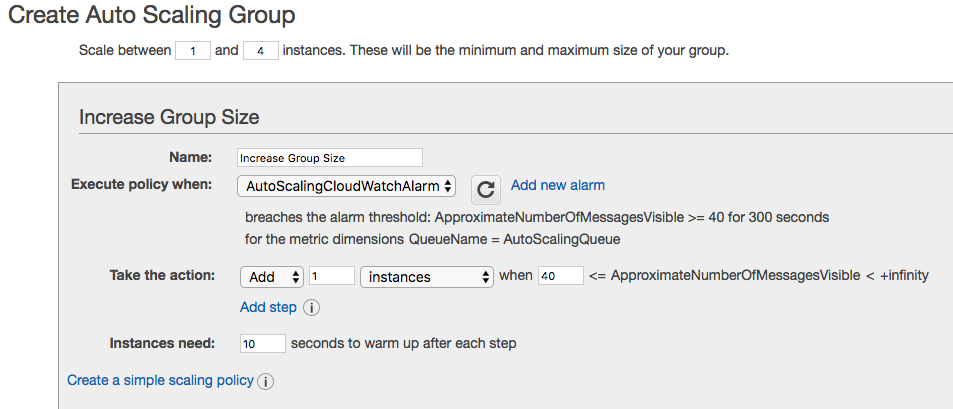

Serverless Projects - AutoScaling Based Off SQS Message Queue Size
Objective of Project:
Auto-scale the infrastructure through a combination of CloudWatch, SQS messages, and AWS’s Auto Scaling feature.
Approach:
First, we create an SQS queue, and then, through CloudWatch, set up an alarm to trigger every time we hit 40 messages in our queue.
When this alarm triggers, another instance is added.
Steps are as below:
Configuring SQS:
Create one Amazon Linux EC2 instance of t2.micro size. We will use this instance to send messages to SQS. After the EC2 instance is created, type the below command to test if messages are sent correctly to SQS.
Configuring Launch Configuaration and AutoScaling Group:

Creating CloudWatch Alarm:
Set up CloudWatch Alarm such that, an instance is created above threshold value of 40 messages
Now that Cloudwatch Alarm is created, run the below script to send 60 messages to SQS (message count greater than our threshold set as 40).
Verify messages received by SQS service.
After some time, autoscaling will recognize that one instance can't handle more than 40 messages, and it will start creating new instances.
Now using AWS console, poll the messages. Delete some messages so that the total message count is below 40.
Autoscaling policy for decreasing instance count will kick off and it will start deleting instance untill there is only one remaining.